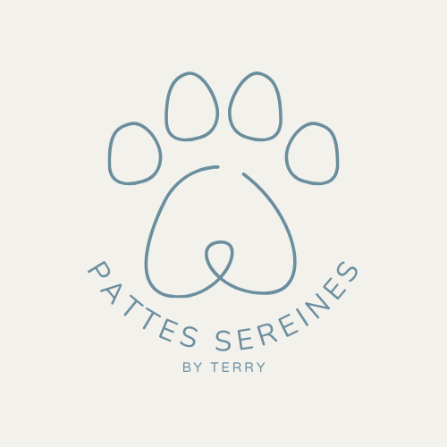

Éducation canine bienveillante & personnalisée
Passionnée par les chiens depuis toujours, j’ai choisi de me former au métier d’éducatrice canine pour accompagner les chiens… mais surtout leurs humains. Mon approche repose sur la compréhension du chien, de ses besoins et de son mode de communication.
Chaque duo maître/chien est unique. Mon rôle est de vous aider à construire une relation équilibrée, basée sur la confiance, la cohérence et le plaisir partagé.
Faire appel à un éducateur, ce n’est pas uniquement répondre à une difficulté. C’est aussi faire le choix d’anticiper, de comprendre, et d’accompagner son chien avec cohérence dès le départ.
On pense souvent à consulter lorsque les choses deviennent compliquées… et pourtant, les bases se construisent bien avant.
Un chiot apprend en permanence. Être accompagné dès le début permet d’éviter bien des incompréhensions.
Et pour un chien adulte, il n’est jamais trop tard pour rééquilibrer une relation.
📅 Prendre rendez-vous, c’est investir dans une relation sereine et durable.
L’arrivée d’un chiot est une étape clé. Je vous accompagne pour poser des bases solides : propreté, solitude, rappel, socialisation…
Traction en laisse, rappel difficile, excitation… Nous travaillons ensemble pour retrouver confort et clarté.
Agressivité, peur, anxiété… Je vous aide à comprendre et à mettre en place des solutions durables.
Un prolongement du travail individuel pour consolider les acquis dans un cadre encadré.
Choix du chien, préparation… Un accompagnement essentiel pour bien démarrer.
Chaque chien mérite d’être compris, et chaque humain mérite une relation harmonieuse avec son compagnon.
📩 N’attendez pas que les difficultés s’installent : contactez-moi dès maintenant.
60 €
55 €
250 €
📧 pattessereines.byterry@gmail.com
📞 06 81 46 76 24
Me contacter sur WhatsApp